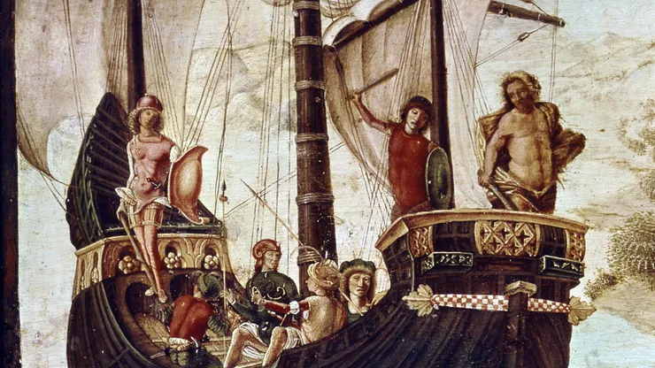
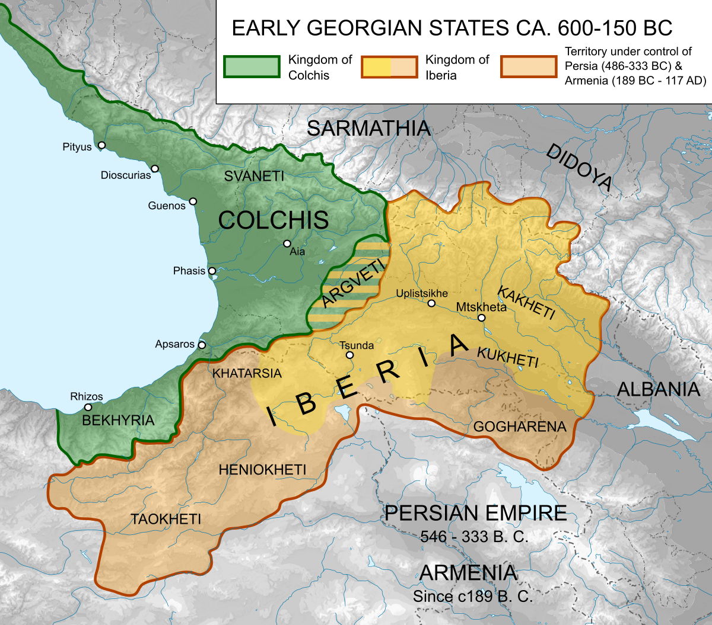
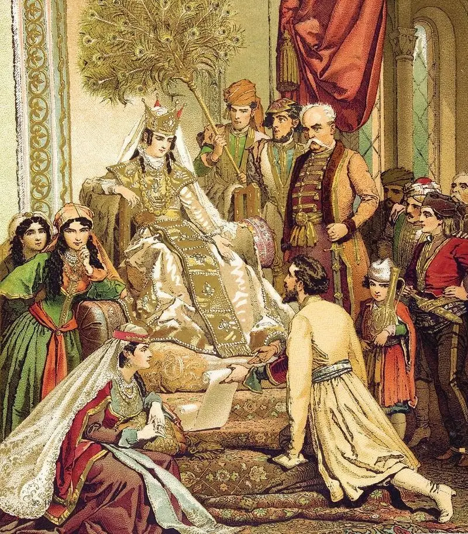
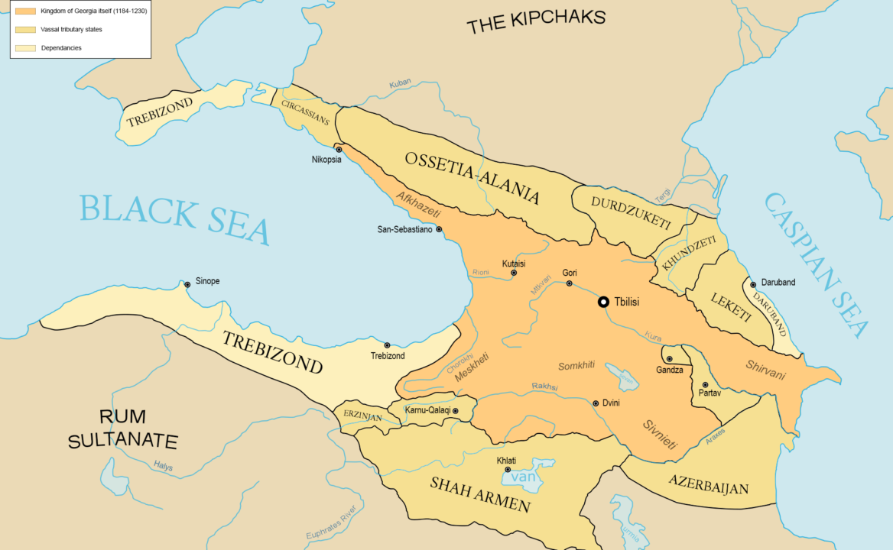
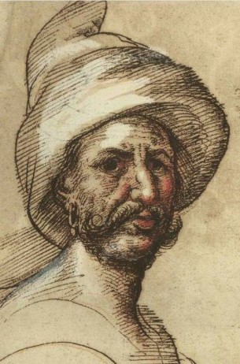
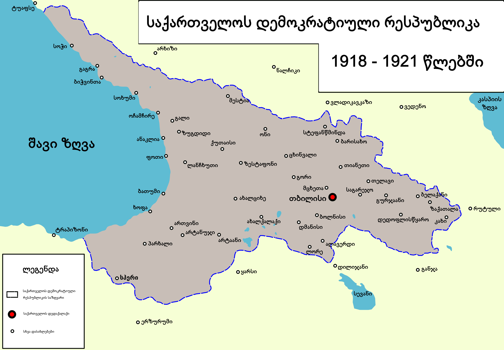

Georgia has 6time periods
Ancient Georgia was marked by the Bronze and iron ages featuring the Colchian and Kura-Araxes cultures. It was renowned for early advancements in metallurgy and significant mythological stories, like Jason and the Argonauts. This period laid the foundation for the later Kingdoms of Colchis and Iberia.
During Classical Antiquity, Georgia experienced the rise of the Colchis and Iberian kingdoms, the spread of Christianity in Iberia, and significant Greek mythological influence.
In the Medieval Period, Georgia saw fragmentation, the Golden Age under King David IV and Queen Tamar, Mongol invasions, and periods of Persian and Ottoman domination, with flourishing culture and territorial expansion during the 11th to 13th centuries.
 n the Early Modern Period, Georgia fragmented into smaller kingdoms and principalities, endured Persian and Ottoman domination, and faced internal strife. Despite these challenges, Georgian culture persisted, with significant contributions to art, literature, and religious architecture from the 15th to 18th centuries.
 -Giorgi SaakadzeIn the Modern Period, Georgia experienced Russian annexation in the early 19th century, followed by brief independence (1918-1921) and Soviet rule from 1921 to 1991. This era was marked by industrialization, political turbulence, and efforts towards independence and democratic reforms post-Soviet dissolution.
Modern Georgia: Since the 2000s, Georgia has focused on democratic reforms, economic development, and integration with Western institutions, such as the European Union and NATO.